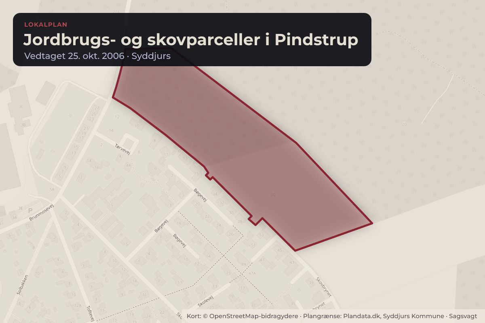
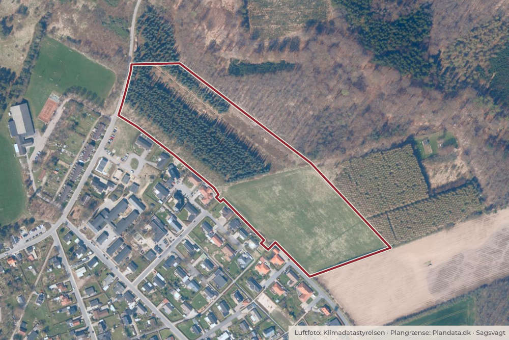

På dagsordenen 2. december, Erhvervs- og planudvalget, Syddjurs
Lokalplan 98 etablering af jordbrugs/skovparceller i Pindstrup. Ophævelse

Kort: © OpenStreetMap-bidragydere. Plangrænse: Plandata.dk, Syddjurs Kommune.

Kort fortalt
- Forslaget
- Lokalplan 98 ophæves, og at beslutningen sendes i offentlig høring i fire uger.
- Tilbageføre areal fra byzone til landzone for den del af byzonen, der er placeret indenfor lokalplan 98.
- Hvem
- Erhvervs- og planudvalget, Syddjurs Kommune
- Hvornår
- Onsdag 2. december 2026
- Status
- På dagsordenen. Sagen behandles på mødet.
- Næste skridt
- Såfremt Byrådet følger Administrationens indstilling og ønsker at ophæve lokalplan 98, sendes beslutningen i høring i fire uger.
Er noget forkert her? Skriv til os
Hvad kan du gøre?
- Hold øje med høringen
- Forslaget lægger op til en offentlig høring. Når den åbner, kan alle sende et høringssvar på syddjurs.dk.
- Skriv til politikerne
- Udvalgets møder er lukkede, men du kan skrive til medlemmerne før mødet onsdag 2. december 2026. Du finder dem på syddjurs.dk.
Læs hele sagen Kommunens egen tekst
Sagens indhold
Erhvervs- og planudvalget igangsatte den 11. marts 2026 lokalplanlægning for en udvidelse af Pindstrupskolen, der placerer sig umiddelbart syd for den eksisterende lokalplan 98. På samme møde igangsatte udvalget arbejdet med at ophæve lokalplan 98 i sin helhed og tilbageføre arealer på dele af matriklerne 5ag og 4dv, fra byzone til landzone. Planlægningen i området foregår som to separate sagsgange, men forslagene ønskes sendt i høring samtidig på grund af planområdernes nærhed til hinanden. I bilag 1 fremgår et kort over gældende lokalplan 98, afgrænsningen af lokalplanlægningen for Pindstrupskolen og aktuelle zoneforhold.
Byrådet vedtog på møde den 30. april 2025 Kommuneplan 2024 endeligt. Hermed blev det også besluttet at ophæve kommuneplanramme 5.2.BE3 - Blandet boligområde i Pindstrup. Ophævelsen af rammeområdet sker på baggrund af et ønske fra lodsejer.
Baggrund
Lokalplan 98 for etablering af jordbrugs-/skovparceller i Pindstrup blev vedtaget i 2006 af Midtdjurs Kommune med henblik på etablering af jordbrugs- og skovparceller i den nordlige del af Pindstrup. Lokalplan 98 er vedlagt som bilag 2.
Lokalplanen medførte, at den sydlige del af lokalplanområdet blev overført fra landzone til byzone, mens den nordlige del fortsat forblev i landzone. Lokalplanen blev samtidig understøttet af et særskilt kommuneplantillæg (ramme B-406, senere 5.2.BE3), der gav det planmæssige grundlag for udviklingen.
Kommunen har efterfølgende ophævet den tilhørende kommuneplanramme, og der foreligger ikke længere planer om byudvikling eller anden lokalplanpligtig udvikling inden for området. Området skal fremadrettet ikke omfattes af ny lokalplanlægning.
Planlovens regler
Efter planloven § 33, stk. 1, nr. 1, kan kommunalbestyrelsen beslutte at ophæve lokalplaner for arealer, der tilbageføres til landzone, samt lokalplaner for landzonearealer, når planlægning for området ikke længere findes nødvendig.
Bestemmelsen er netop tiltænkt situationer, hvor et eksisterende planlægningsgrundlag ikke længere har et planmæssigt formål, og hvor kommunen ikke ønsker at erstatte lokalplanen med ny planlægning.
Screening for miljøvurderingspligt.
Ophævelse af en lokalplan efter planlovens § 33 er omfattet af miljøvurderingslovens regler, hvor det skal vurderes, om ophævelsen kan forventes at få væsentlig indvirkning på miljøet.
Administrationen har derfor foretaget en screening efter miljøvurderingsloven og har vurderet, at ophævelsen ikke vil medføre en væsentlig påvirkning på miljøet. Der er derfor ikke udarbejdet en miljøvurdering.
Administrativ vurdering
Det vurderes, at de planlægningsmæssige forudsætninger, der lå til grund for vedtagelsen af lokalplan 98, ikke længere er til stede, idet:
• Den kommuneplanramme, som understøttede lokalplanens formål, er ophævet.
• Kommunen har ikke længere et planlægningsmæssigt ønske om byudvikling inden for området, og der skal ikke udarbejdes en ny lokalplan for arealet. Lokalplanen blev endeligt vedtaget i 2006, og intet af indholdet er realiseret.
• Lodsejer og Syddjurs Kommune ønsker at tilbageføre området til den oprindelige landzonestatus.
• Den rummelighed, der er indeholdt i lokalplanen, spærrer for anden udvikling og bymæssig prioritering i Pindstrup.
• Lokalplanen muliggør desuden mindre landbrug i direkte tilknytning til boliger og institutioner i byzone. Her opstår en mulig konflikt, og det vil forventeligt kræve dispensationer for at realisere indholdet i lokalplan 98.
På denne baggrund vurderes det, at betingelserne for ophævelse efter § 33, stk. 1, nr. 1, er opfyldt. Ophævelsen bør omfatte hele lokalplanområdet, således at både den eksisterende landzonedel og den del af området, som ved lokalplanens vedtagelse blev overført til byzone, omfattes af beslutningen.
Arealet tilbageføres herefter samlet til landzone. Efter ophævelsen vil området dermed skulle administreres efter bestemmelserne i planlovens kapitel 7 om landzone.
Økonomi og organisatoriske konsekvenser
Administrationens indstilling har ingen økonomiske konsekvenser.
Videre proces
Såfremt Byrådet følger Administrationens indstilling og ønsker at ophæve lokalplan 98, sendes beslutningen i høring i fire uger. Såfremt høringen ikke vurderes at give anledning til fornyet politisk behandling vil den bliver ophævet i det nationale register for lokalplaner ved Plan- og landdistriktsstyrelsen.
Lovgrundlag
Planloven – Lov om planlægning, lovbekendtgørelse nr. 572 af 29. maj 2024.
Miljøvurderingsloven – Lov om miljøvurdering af planer og af konkrete projekter (VVM), lovbekendtgørelse nr. 4 af 3. januar 2023.
Indstilling
Direktøren for Udvikling og Kultur indstiller til Byrådet via Erhvervs- og planudvalget og Økonomiudvalget, at godkende, at
• lokalplan 98 ophæves, og at beslutningen sendes i offentlig høring i fire uger.
• tilbageføre areal fra byzone til landzone for den del af byzonen, der er placeret indenfor lokalplan 98.
Bilag
Kilde: Syddjurs Kommune, Erhvervs- og planudvalget, dagsorden fra mødet onsdag 2. december 2026, punkt 146. Læs den originale sag hos kommunen.